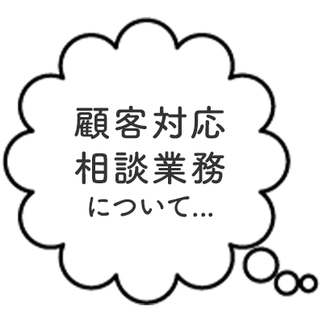
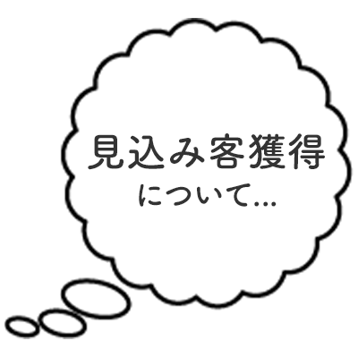
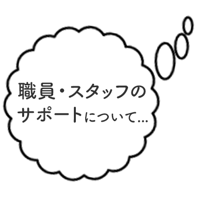
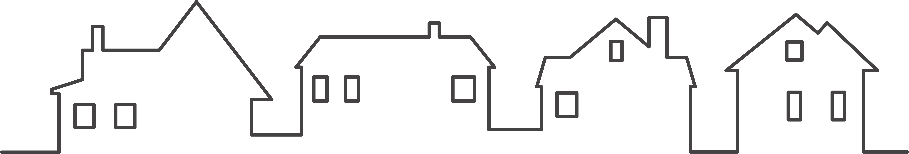
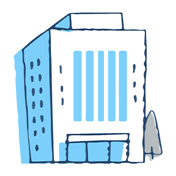

法律・税務・労務…
その裏側にある
“お客さまの不安”
士業の仕事は、専門性だけではなく
「不安を解消すること」が
大きな価値になっています。
相続、後見、労務問題、
離婚、遺言、経営相談──
どのテーマにも、必ず「健康」「介護」「将来の不安」が隠れています。
ホームDEナース法人プランは、
その見えない不安に寄り添い、
お客さまとの関係性を
より深く・長く続かせるための
新しい“安心提供ツール”です。
こんなお悩みは
ありませんか？




顧客対応・相談業務
について
- お客さまから健康・介護・メンタルに関する相談を受けても、専門領域外で答えづらい
- 高齢のお客さまが抱える不安が多く、時間を取られてしまう
- 相続・後見・終活の相談が増え、健康問題と切り離せなくなってきた
- 顧客の家族までケアする仕組みがなく、関係構築が一時的になりがち
見込み客獲得について
- 新規相談者との継続接点が少なく、関係が途切れてしまう
- 無料サービスとして渡せる“価値あるツール”がほしい
- 安心や信頼を感じてもらい、紹介につながる仕組みづくりをしたい
- 相続・終活領域で、「健康」と「介護」のニーズを掘り起こしたい
職員・スタッフのサポート
について
- スタッフ自身の家族の介護・健康問題で不安がある
- 健康経営に取り組みたいが、小規模事務所では対策が難しい
- お客さま対応のストレスを軽減したい

お客さまやスタッフが自宅から
気軽に看護師へ相談できる
オンラインの健康・医療・介護
相談サービスです。

士業の現場では、
法律・手続きに加え
“人生の健康・介護の不安”
が必ず表れます。
そこに確かな相談窓口を
プラスすることで、
- 関係性が深まる
- 信頼度が上がる
- 相談窓口として選ばれ続ける
- 紹介が増える
という効果につながります。
選ばれています ／
ホームDEナースの利用料金は、
福利厚生費・交際費などの
会社経費として
扱える場合があります。

こんな
士業事務所さまに
おすすめです
相続・遺言・後見など
高齢者対応が多い
事業所さま
健康・家族・将来の不安に寄り添えるため、相談の質が高まります。
顧問先の“従業員ケア”
にも関わる士業さま
社労士、税理士、弁護士など、顧客企業の健康経営支援としても活用できます。
紹介を増やしたい
事務所さま
無償提供サービスが
「紹介しやすい理由」として機能します。
職員のメンタルケアや
働きやすさを整えたい
事務所さま
小規模事務所でも導入しやすく、負担軽減に役立ちます。
お客さまの声
「相続・後見の相談につながる“安心の入口”ができました。」
健康や介護の不安を抱えたご家族は多く、専門外の相談に対応することも増えていました。
ホームDEナースを案内すると、「こんなサービスがあるなら安心」と信頼が深まり、相続や終活相談につながる件数も増えました。
「顧問先の従業員ケアに提案でき、喜ばれています。」
顧問先企業の健康経営に関する相談が増えていましたが、専門外で十分に支援できませんでした。
今は“看護師に相談できるサービス”として提案でき、顧問先から非常に喜ばれています。
「従業員の健康相談の負担が減り、顧問先の信頼が高まりました。」
従業員の不安に寄り添う必要がある場面でも、看護師の方に相談を任せられるため、社内の負担も減って助かっています。
導入の流れ
（対象人数・活用目的）

・スタッフへ利用開始

※ご希望に応じて提出